CA1 – Image Processing Fundamentals
Mahdy Mokhtari
810101515
University of Tehran
Computer Vision Course
28/7/1404
Introduction
This report presents the results of three main tasks related to fundamental concepts in computer vision and image processing. The objective of this assignment is to gain a foundational understanding of different types of images, color models, and essential operations in image and video processing using Python and OpenCV.
First part: we explore image loading, type identification, and conversions between color spaces (RGB, Grayscale, Binary, HSV). We also analyze and adjust image contrast and histograms through techniques such as histogram stretching and equalization.
Second part: we investigate noise and filtering methods. Various filters—including mean, Gaussian, median, Sobel, and Laplacian—are applied to demonstrate noise reduction, smoothing, and edge detection. The section also covers the concept and implementation of kernels.
Third
part: we work with
video files by loading, analyzing frame rates, and applying noise
and filtering operations to video sequences.
Task 1
1. We loaded the image. The data type was a u-int. It had 3 color channels (blue, green, red)
Fig 1 . Original Image

Fig 2. Data type, Channels
2. When we load the image with the imread of OpenCV it is set as BGR. First we adjust the channels to be a RGB. In RGB we have 3 channels that each contain an unsigned integer number from 0 to 255 (discrete) and the each pixel is the combination of these 3 so they determine the color of the pixel.
The grayscale that we convert our image color to has only one channel that stores an integer number from 0 to 255, which represents the intensity of the gray color. The 0 represents the black and the 255 represents the white and in the middle, there will be in gray and lighter or darker.
The Binary (Black and white) is just only 255 or 0 (we need one bit to store it but because the least big is byte in terms of size so we store it as all 1s in binary or all 0s in binary). This method represents each pixel as only black or white. (We convert the grayscale to binary using a threshold usually being 127)
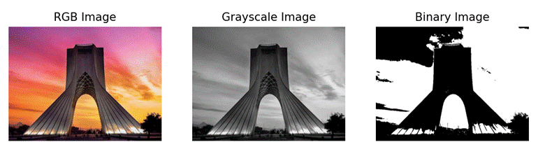
Fig 3. Different Color Models
3. Another color model is HSV, which consists of Hue, Saturation, and value. Hue represents the color type. The saturation represents the intensity of the color. The value shows the brightness of the color.
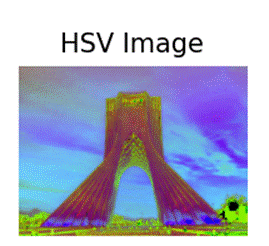
Fig 4. HSV image
4. We did this in the python code.
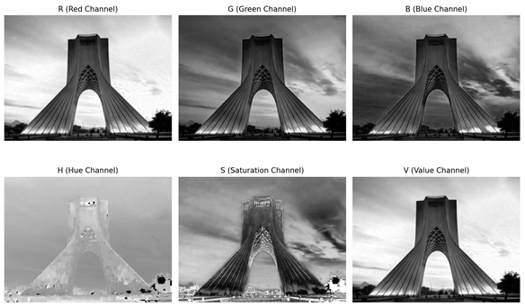
Fig 5. Different components (grayed)
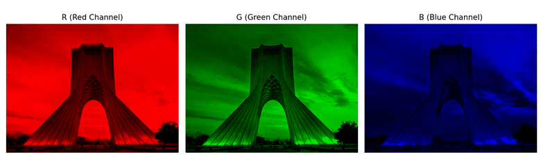
Fig 6. Different components (rgb-colored)
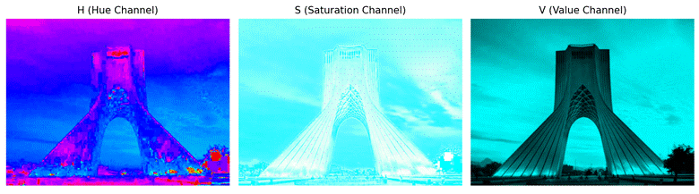
Fig 7. Different components (hsv-colored)
5. Contrast describes the difference in brightness or color between parts of an image. The mathematical definition is that get the darkest color in the picture and lightest and then get their subtraction, that’s contrast.
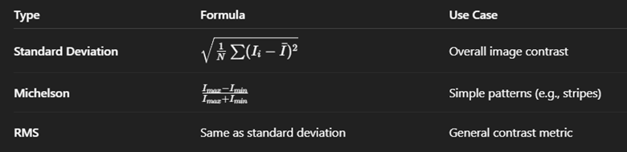
Fig 8. Different contrasts (Gpt5 generated)
The image contrast was 58.55.
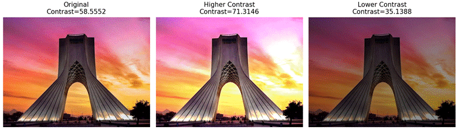
Fig 9. Higher and lower contrast of our image
6. A histogram shows the distribution of pixel intensity values in an image. It's when we have 256 bins and see in each bin what the frequency of occurrence is in the pixels. We can plot this histogram to indicate which intensity levels occur more often.
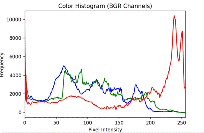
Fig 10. Histogram of base image
7. Histogram Stretching: Histogram stretching is a linear transformation that expands the range of pixel intensity values in an image so that they span the full available range (e.g., from 0 to 255 for 8-bit images).
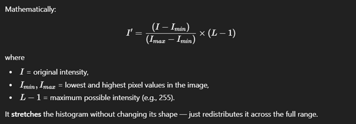
Fig 11. Histogram Stretching Formula
Histogram Equalization: Histogram equalization redistributes pixel intensities so that the histogram becomes more uniform — meaning each intensity level occurs approximately equally often.
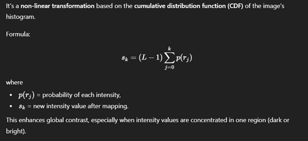
Fig 12. Histogram Equalization Formula
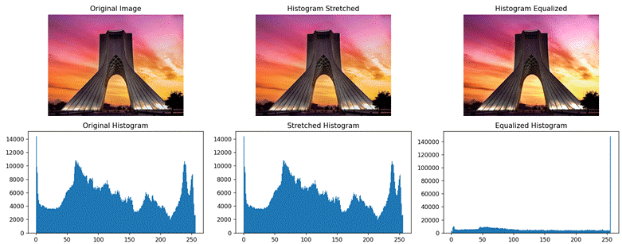
Fig 13. Stretched & Equalized histogram
Task 2
1. We upload the same image with imread of the OpenCV.
2. The Salt and pepper noise is a type of noise where random pixels are replaced by either maximum intensity (white = 255) or minimum intensity (black = 0) values. In this kind of noise that we could apply to our image or video we have to have a salt_vs_pepper and a percentage_amount in our parameters. The salt_vs_pepper parameter determines the ratio of white (‘salt’) to black (‘pepper’) noise added to the image — that is, how many pixels are replaced with white values versus black values. The percentage_amount is about the percentage in total we will have black and white being replaced in the pixels instead of the originals.
Used in testing image denoising filters.
Used to simulate real-world transmission or sensor noise.
The Gaussian noise is a type of random noise where the pixel intensity values are modified by adding random values drawn from a Gaussian (normal) distribution.
Used to simulate sensor or thermal noise in digital cameras.
Used to test smoothing filters (like Gaussian blur or bilateral filters).
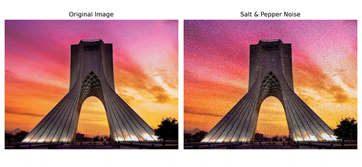
Fig 14. Salt and pepper filter
3. The Kernel is a matrix that we use for different tasks (each task has its own matrix(kernel)) , we use it to modify images through convolution.
Each kernel contains numerical values (weights) that define how a pixel’s new value is calculated based on its neighborhood.
In other words, A kernel (also called a filter or mask) in image processing is a small matrix (usually 3×3, 5×5, etc.) that is used to modify images through a mathematical operation called convolution.
We use this KERNAL for different tasks such as:
· Smoothing
· Blurring
· Edge detection
· Image sharpening
· Feature extraction
· Image enhancement
· Noise reduction
We apply the filter by first placing the kernel matrix on a section of the image. Secondly we multiply the corresponding elements. Then we sum the results to produce one new pixel value. When this is done, we repeat this process for all pixels of our image. (This is the exact process of convolution for discrete values)
4. The mean filter replaces each pixel value with the average of the neighboring pixels covered by the kernel.
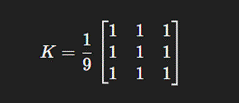
Fig 15. Mean kernel (3x3)
The median filter replaces each pixel value with the median (middle value) of all the neighboring pixels in the kernel window.
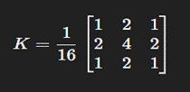
Fig 16. Median kernel (3x3)
The Gaussian filter uses a kernel where the weights follow a Gaussian (bell-shaped) distribution — pixels closer to the center get higher weights. Because it's Gaussian, it follows the normal dist. So it is not linear, therefore, there are no kernel matrix of weights like the other two.
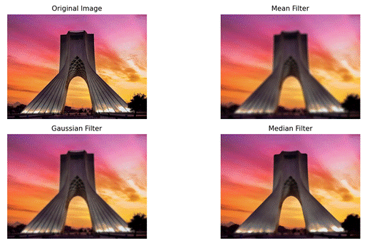
Fig 17. Mean, median, gaussian filters
5. Because the noise that we have is salt and pepper, the Median filter is the best filter here that we can use. The matrix is in a way that picks the median so this way the outliers that are noise (black and white and are less) will not get picked and we will have almost a clear noised removed image with a slight decrease in quality (we had no other choice).
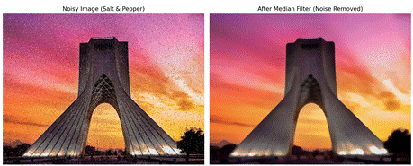
Fig 18. Noise removed
6. The Canny edge detector is a multi-stage algorithm that detects a wide range of edges optimally. It combines Gaussian smoothing, gradient computation, non-maximum suppression, and hysteresis thresholding.
Used in :
· Used in computer vision pipelines for robust edge detection.
· Object contour detection, document scanning, road/lane detection, face and feature extraction.
· Performs better in noisy or real-world images.
The Sobel operator is a gradient-based edge detector that calculates the first derivative of the image intensity. It finds edges by measuring how quickly pixel values change in both the x (horizontal) and y (vertical) directions.
Used in:
· detecting edges and contours in images.
· Used in lane detection, object boundary extraction, and document scanning.
· Preprocessing step for object recognition or segmentation.
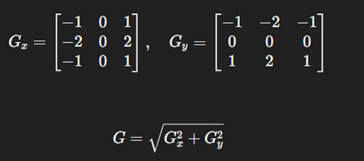
Fig 19. On both axes, the Sobel kernel
The Laplacian operator detects edges using the second derivative of image intensity. It highlights regions where the rate of change of intensity changes — i.e., where gradients change sharply.
Used in:
· Edge detection emphasizing both horizontal and vertical directions.
· Feature extraction in object detection.
· Used as part of the Laplacian of Gaussian (LoG) for smoother edge detection.
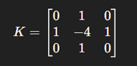
Fig 20. One instance of the Laplacian kernel
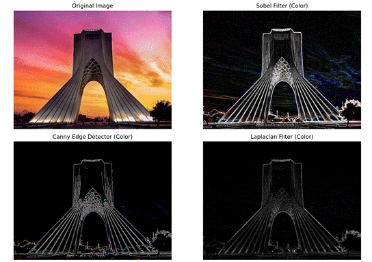
Fig 21. Sobel, Canny, Laplacian filters (edge detection) – grayed
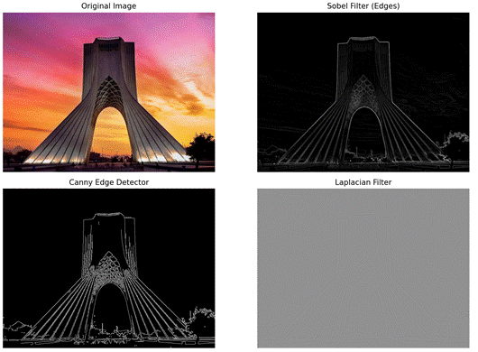
Fig 22. Sobel, Canny, Laplacian filters (edge detection) - colored
Task 3
1. First we load the video using the VideoCapture of the OpenCV library.
2. We got the fps and the frame counts.
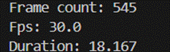
Fig 23. Frame count & fps
3. I have put the output of the video in the zip file. I have an instance of the vid in image here.
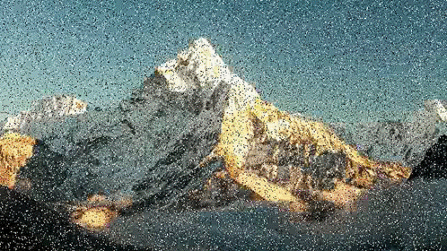
Fig 24. An instance of the filtered video